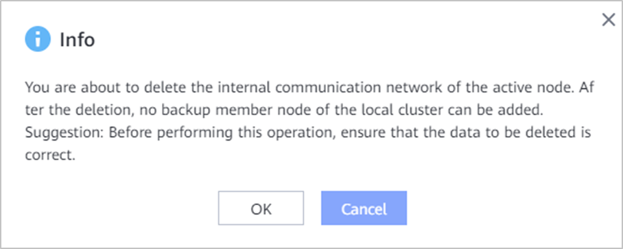

This section describes how to delete the internal communication network of an active node.
Precautions
- After a member node is added, the internal communication network cannot be deleted.
Procedure
- Choose .
- Click Backup Cluster.
- In the row that contains the target active node, choose .
- In the dialog box that is displayed, confirm the information and click OK.
